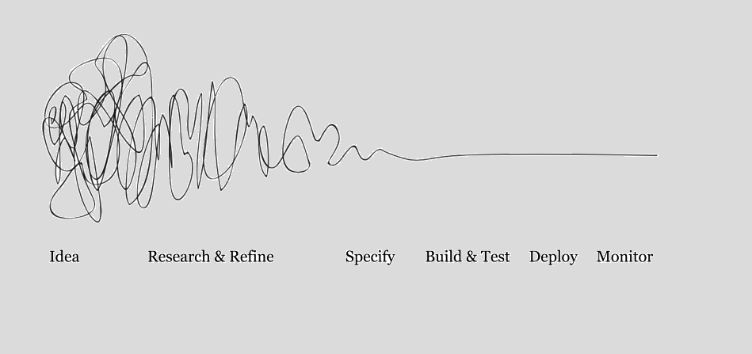
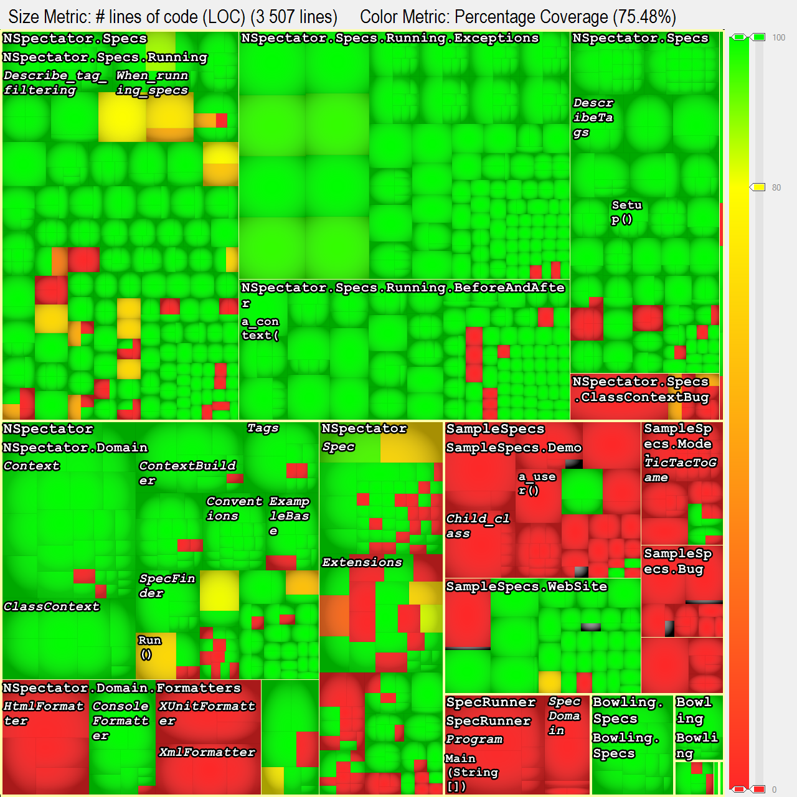
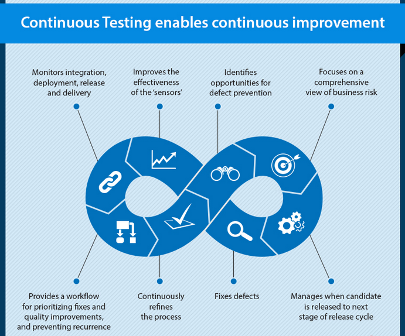
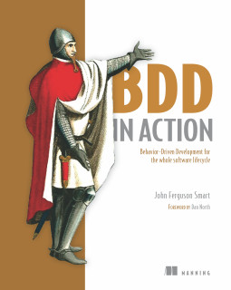

Continuous testing
Ivan Novikov
Новиков Иван
https://github.com/jonny-novikov
@jonny
Моя позиция может не совпадать с позицией компаний, в которых я работаю
Кто я?

Ivan Novikov
CTO at Amiforus & Backend engineer at ozon.travel
Agenda
Понятие качества ПО
Метрики кода
Семейства 'continuous' и 'continuously'
Примеры на C#
Полезные инструменты
Q&A
Качество ПО

Обеспечение качества (SQA)
средства мониторинга процессов разработки программного обеспечения
методы, используемые для контроля качества
Функция качества
Q() {
researchAndRefine()
specify()
buildAndTest()
deploy()
monitor()
}
Обеспечение качества
do Q() until ...
Ценность продукта
Vr = Q(Va),
Vr = real value,
Va = assumed value
Self-test
Метрики кода
Метрики кода
Статический анализ
Покрытие кода
...
Покрытие кода

Метрики разработчика и команды
Скорость, продуктивность, ...
Метрики разработчика и команды
Скорость != продуктивность
Нельзя управлять тем, что невозможно измерить...
Семейство 'continuous'
Continuous integration
Continuous testing
Continuous deployment
Continuous delivery
Continuous deployment & delivery

Continuous integration & testing
Appveyor
Нужен всего один файл в проекте
before_build:
...
- nuget-restore
build:
project: NSpectator.sln
verbosity: normal
test:
assemblies:
- NSpectator.Specs.dll
artifacts:
- path: src\NSpectator\bin\Debug\NSpectator.dll
Continuous test driven development
Самодокументируемый код
Раньше, чаще, везде
Процесс

Continuously testing
Visual studio, C#
Инструменты
Коммерческие:
Показ в действии...
Изучение xTDD
Kata`s
Материалы
BDD In Action, John Ferguson Smart, Manning 2014

Q&A
Презентация тут: http://j.mp/continuous-test